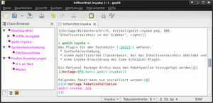

gedit-inyoka
Dieser Artikel wurde für die folgenden Ubuntu-Versionen getestet:
Ubuntu 14.04 Trusty Tahr
Zum Verständnis dieses Artikels sind folgende Seiten hilfreich:
gedit-inyoka ist eine Erweiterung für den Texteditor gedit und umfasst:
Syntaxhervorhebung (GtkSourceView) für Inyoka-Markup,
ein Classbrowser-Plugin, das das Inhaltsverzeichnis abbildet und
eine Inyoka-Erweiterung des Code-Schnipsel-Plugin.
Installation¶
Das Programm ist nicht in den offiziellen Paketquellen enthalten.
|  |
| Inhaltsverzeichnis in der Sidebar |
PPA¶
Zur Installation kann ein "Personal Package Archiv" (PPA)[1] den Paketquellen hinzugefügt werden. Dabei besteht die Wahl zwischen der stabilen und der Entwickler-Version.
Nach dem Hinzufügen des PPAs und dem Aktualisieren der Paketquellen können folgende Pakete installiert[2] werden:
gedit-inyoka (ppa)
gedit-classbrowser3g (ppa)
 mit apturl
mit apturl
Paketliste zum Kopieren:
sudo apt-get install gedit-inyoka gedit-classbrowser3g
sudo aptitude install gedit-inyoka gedit-classbrowser3g
Stabile Version¶
Adresszeile zum Hinzufügen des PPAs:
ppa:barcc/gedit-inyoka
Hinweis!
Zusätzliche Fremdquellen können das System gefährden.
Ein PPA unterstützt nicht zwangsläufig alle Ubuntu-Versionen. Weitere Informationen sind der  PPA-Beschreibung des Eigentümers/Teams barcc zu entnehmen.
PPA-Beschreibung des Eigentümers/Teams barcc zu entnehmen.
Damit Pakete aus dem PPA genutzt werden können, müssen die Paketquellen neu eingelesen werden.
Entwickler Version¶
Adresszeile zum Hinzufügen des PPAs:
ppa:barcc/daily-build
Hinweis!
Zusätzliche Fremdquellen können das System gefährden.
Ein PPA unterstützt nicht zwangsläufig alle Ubuntu-Versionen. Weitere Informationen sind der PPA-Beschreibung des Eigentümers/Teams barcc zu entnehmen.
Damit Pakete aus dem PPA genutzt werden können, müssen die Paketquellen neu eingelesen werden.
Konfiguration¶
Syntax-Hervorhebung¶
Die Syntax-Hervorhebung wird automatisch für Dateien mit Inyoka Markup oder über "Ansicht -> Hervorhebungsmodus -> Auszeichnung -> Inyoka" aktiviert. Für die automatische Erkennung wird geprüft, ob der Dateinamen auf .inyoka endet oder ob der Dateiinhalt wie folgt beginnt:
[[Vorlage(,{{{#!vorlageoder[[Inhaltsverzeichnis(
Classbrowser¶
Vor der Benutzung muss unter "Bearbeiten -> Einstellungen -> Plugins" das Plugin "Class Browser 3g" aktiviert werden. Dort können auch einige Einstellungen, wie zum Beispiel die Farben des Classbrowsers verändert werden.
Der Classbrowser ist ein Reiter in der Seitenleiste. Aktiviert wird die Seitenleiste über "Ansicht -> Seitenleiste" oder die Taste F9 .
Code-Schnipsel¶
Unter "Bearbeiten -> Einstellungen -> Plugins -> Schnipsel" oder über "Werkzeuge -> Schnipsel verwalten" werden auch die Inyoka-Code-Schnipsel verwaltet. Es können die vorhandenen Schnipsel bearbeitet, neue Einträge erstellt und Tastenkürzel zum Einfügen festgelegt werden.
Mit der Tastenkombination
Strg +
wird ein Auswahlmenü verfügbarer Schnipsel angezeigt, die man mit einem Doppelklick  in den Text einfügen kann. Alternativ kann nach Eingabe der Tabulatorauslösung mit
Tab ⇆ das Schnipsel eingefügt werden. Zum Beispiel fügt
T
A
S
T
E
Tab ⇆ die Tastenvorlage ein.
in den Text einfügen kann. Alternativ kann nach Eingabe der Tabulatorauslösung mit
Tab ⇆ das Schnipsel eingefügt werden. Zum Beispiel fügt
T
A
S
T
E
Tab ⇆ die Tastenvorlage ein.

 Übersichtsartikel
Übersichtsartikel- Erstellt mit Inyoka
-
 2004 – 2017 ubuntuusers.de • Einige Rechte vorbehalten
2004 – 2017 ubuntuusers.de • Einige Rechte vorbehalten
Lizenz • Kontakt • Datenschutz • Impressum • Serverstatus -
Serverhousing gespendet von